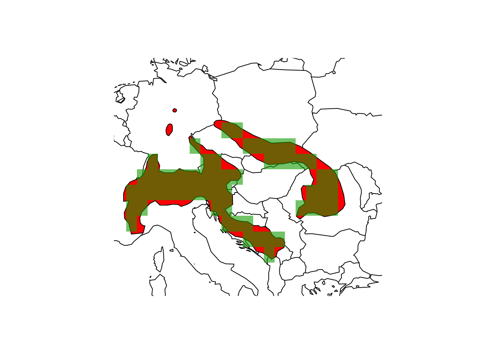
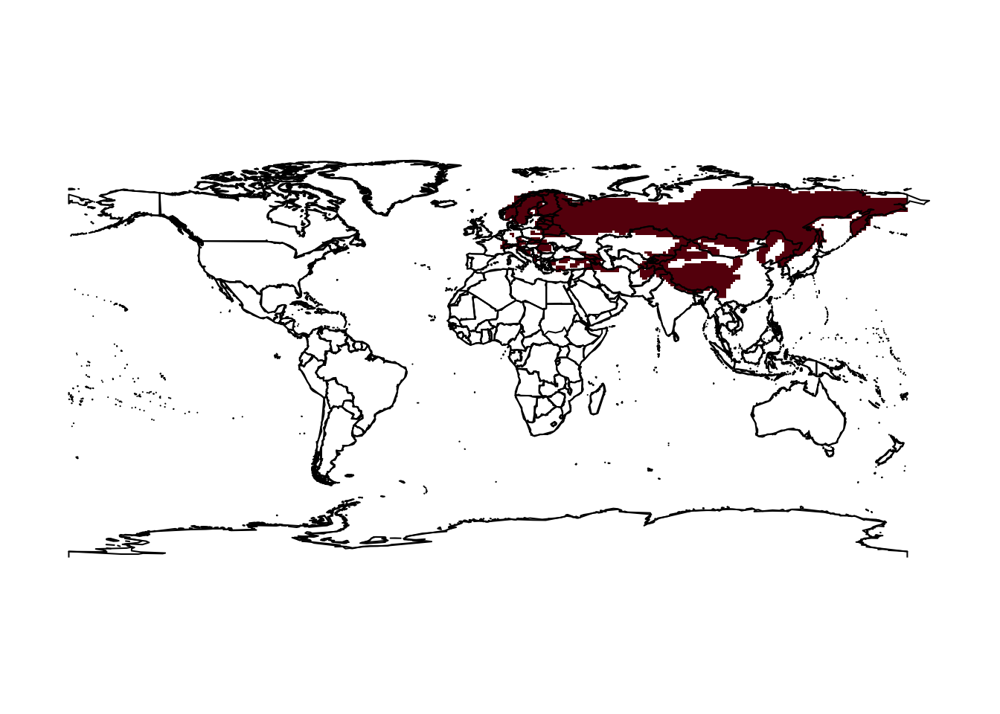

Biodiversity data
RStudio project
Open the RStudio project that we created in the first session. I recommend to use this RStudio project for the entire course and within the RStudio project create separate R scripts for each session.
- Create a new empty R script by going to the tab “File”, select “New File” and then “R script”
- In the new R script, type
# Session 2: Biodiversity dataand save the file in your folder “scripts” within your project folder, e.g. as “2_BiodivData.R”
We are living in an age of big data where biodiversity data are becoming increasingly available in digital format and at a global scale (Wüest et al. 2020). Many different types of biodiversity data exist relating to the distribution of species (e.g. from standardised monitoring schemes, citizen science platforms, or expert knowledge), to species conservation status, species traits, etc. Each of these data types comes with own challenges. Here, we simply want to learn how we can obtain and process typical types of species data. Specifically, we will work with range maps of terrestrial animals and plants from the IUCN (Internation Union for the Conservation of Nature, iucnredlist.org/) and the red list data from IUCN.
1 Range maps
We rarely have detailed biodiversity data available over large geographic extents. At broad (continental to global) extents, expert-drawn range maps (also called extent-of-occurrence maps) are often the primary data source on species distributions.
1.1 IUCN range maps
The IUCN (the International Union for the Conservation of Nature) provides expert range maps for a large number of species including mammals, birds (through BirdLife International), amphibians, reptiles, and freshwater fishes. There are also some range maps on plants and marine species, but these are very limited taxonomically. Have a look for which taxa range maps are available: https://www.iucnredlist.org/resources/spatial-data-download. You can download them for free, but you should provide some information on your work to obtain the data.
Most of the IUCN data are provided in the form of shapefiles. In
practical 2, we have already loaded the range map of the Alpine shrew and learned how to
use the package terra for reading in the shapefiles. You
may remember that the shapefile is recognized as SpatVector
object.
library(terra)
# Load the shapefile
(shrew <- terra::vect('data/IUCN_Sorex_alpinus.shp'))## class : SpatVector
## geometry : polygons
## dimensions : 1, 27 (geometries, attributes)
## extent : 5.733728, 26.67935, 42.20601, 51.89984 (xmin, xmax, ymin, ymax)
## source : IUCN_Sorex_alpinus.shp
## coord. ref. : lon/lat WGS 84 (EPSG:4326)
## names : id_no binomial presence origin seasonal compiler yrcompiled
## type : <chr> <chr> <int> <int> <int> <chr> <int>
## values : 29660 Sorex alpinus 1 1 1 IUCN 2008
## citation source dist_comm (and 17 more)
## <chr> <chr> <chr>
## IUCN (Internat~ NA NA# Plot the Central Europe
library(maps)
map('world',xlim=c(5,30), ylim=c(40,55))
# Overlay the range of the Alpine Shrew
plot(shrew, col='red', add=T)
Unfortunately, there is no API for the IUCN range maps. So, you need to register with IUCN and then you can download range maps for different taxonomic groups. The range maps for birds come as separate shape files per species, while the range maps of mammals are provided as single shapefile that contains all species. Course participants can download the mammal shapefile from the moodle course - of course, the license agreements by the IUCN apply!
# Read shapefile for all mammals using the raster package:
mammals <- terra::vect('data/MAMMTERR.shp')The shapefile contains the range polygons for all described mammal species. The attribute table contains information on species’ PRESENCE, ORIGIN, and SEASONALity. Please have a look at the metadata to understand the different values these attributes can be coded as.
mammals## class : SpatVector
## geometry : polygons
## dimensions : 43444, 14 (geometries, attributes)
## extent : -180.0001, 180.0025, -56.66595, 90 (xmin, xmax, ymin, ymax)
## source : MAMMTERR.shp
## coord. ref. : lon/lat WGS 84 (EPSG:4326)
## names : BINOMIAL PRESENCE ORIGIN SEASONAL COMPILER YEAR
## type : <chr> <int> <int> <int> <chr> <int>
## values : Amblysomus cor~ 1 1 1 IUCN 2008
## Amblysomus hot~ 1 1 1 IUCN 2008
## Amblysomus mar~ 1 1 1 IUCN 2008
## CITATION SOURCE DIST_COMM ISLAND (and 4 more)
## <chr> <chr> <chr> <chr>
## IUCN (Internat~ NA NA NA
## IUCN (Internat~ NA NA NA
## IUCN (Internat~ NA NA NA# Inspect attribute table
terra::head(mammals)## BINOMIAL PRESENCE ORIGIN SEASONAL COMPILER YEAR
## 1 Amblysomus corriae 1 1 1 IUCN 2008
## 2 Amblysomus hottentotus 1 1 1 IUCN 2008
## 3 Amblysomus marleyi 1 1 1 IUCN 2008
## 4 Amblysomus robustus 1 1 1 IUCN 2008
## 5 Amblysomus septentrionalis 1 1 1 IUCN 2008
## 6 Amblysomus septentrionalis 1 1 1 IUCN 2008
## CITATION SOURCE DIST_COMM ISLAND
## 1 IUCN (International Union for Conservation of Nature) <NA> <NA> <NA>
## 2 IUCN (International Union for Conservation of Nature) <NA> <NA> <NA>
## 3 IUCN (International Union for Conservation of Nature) <NA> <NA> <NA>
## 4 IUCN (International Union for Conservation of Nature) <NA> <NA> <NA>
## 5 IUCN (International Union for Conservation of Nature) <NA> <NA> <NA>
## 6 IUCN (International Union for Conservation of Nature) <NA> <NA> <NA>
## SUBSPECIES SUBPOP SHAPE_area SHAPE_len
## 1 <NA> <NA> 4.93503476 15.575123
## 2 <NA> <NA> 19.94471634 28.392110
## 3 <NA> <NA> 0.12779360 1.902574
## 4 <NA> <NA> 0.09936845 1.655898
## 5 <NA> <NA> 0.25763915 2.078154
## 6 <NA> <NA> 2.70333866 7.080348We can search for specific species or species groups in the attribute table in different ways:
# Range map for the species 'Lynx lynx'
terra::subset(mammals, mammals$BINOMIAL == "Lynx lynx")
# Show all entries for the species with the word 'Lynx' in their name
grep('Lynx',mammals$BINOMIAL, value=T)
# Range map for all species with the word 'Lynx' in their name
mammals[grep('Lynx', mammals$BINOMIAL),]We can use the attribute table subsets to select specific polygons that we want to look at.
# Assign range map of the Eurasian lynx to separate object
lynx_lynx <- mammals[mammals$BINOMIAL=='Lynx lynx',]
# Map the range
map('world')
plot(lynx_lynx, col='red', add=T)
Test it yourself
- Select another mammal species and plot the range map.
2 Working with range maps
2.1 Range size and range centre
The terra package allows to easily calculate the area of
the polygons, meaning the range size of our species. The function
expanse() outputs the area in square meters, kilometers or
hectars.
# Range area of alpine shrew in square kilometers:
terra::expanse(shrew, unit="km")## [1] 490543.3# Range area of lynx in square kilometers:
terra::expanse(lynx_lynx, unit="km")## [1] 2.967561e+03 6.914190e+03 8.054239e+03 3.253875e+03 3.023117e+03
## [6] 3.845284e+03 3.936121e+03 1.591402e+04 3.451279e+04 1.478952e+03
## [11] 1.459179e+03 8.941187e+02 2.537009e+03 1.146910e+03 1.663037e+03
## [16] 1.614079e+04 1.123943e+03 2.150669e+03 1.998317e+01 4.216219e+02
## [21] 1.443828e+02 1.268629e+02 9.164054e+01 8.175484e+01 7.030462e+01
## [26] 4.550536e+01 5.887205e+01 3.454557e+01 4.305188e+01 4.402397e+01
## [31] 4.070125e+01 4.511146e+01 2.962505e+01 1.322173e+05 1.693141e+07
## [36] 1.310182e+04 5.163677e+03 1.436962e+04 4.393103e+04 2.388271e+03
## [41] 1.835570e+05 4.498608e+04 1.226286e+04 4.414687e+06 1.188083e+04
## [46] 5.946663e+04 2.545997e+00 1.393808e+04We can also very easily calculate the centre of gravity or range
centroid from the SpatVector object.
# Range centroid:
terra::centroids(shrew)## class : SpatVector
## geometry : points
## dimensions : 1, 27 (geometries, attributes)
## extent : 16.02645, 16.02645, 46.90336, 46.90336 (xmin, xmax, ymin, ymax)
## coord. ref. : lon/lat WGS 84 (EPSG:4326)
## names : id_no binomial presence origin seasonal compiler yrcompiled
## type : <chr> <chr> <int> <int> <int> <chr> <int>
## values : 29660 Sorex alpinus 1 1 1 IUCN 2008
## citation source dist_comm (and 17 more)
## <chr> <chr> <chr>
## IUCN (Internat~ NA NA# Map the species range and add the centroid to the map
map('world',xlim=c(5,30), ylim=c(40,55))
plot(shrew, col='red', add=T)
points(terra::centroids(shrew), col='blue',cex=3,pch="+")
We need to be careful how to interpret these centroids. They represent the centre of gravity, i.e. the mean coordinates of the distribution (weighted by cell size) but obviously, if we have several patches, the centroid might not even fall within an occupied patch.
Exercise:
- Use the range map of the mammal species you selected above, and calculate the range size and range centroid. Add the point location of your centroid to the range map that you have plotted previously.
2.2 Rasterising range maps
For many applications in ecosystem and biodiversity research, we need to rasterise the polygons. The problem is that it is unclear at which spatial resolution the range maps accurately represent species occurrences. Hurlbert and Jetz (2007) and Jetz, McPherson, and Guralnick (2012) define the minimum spatial resolution as 100-200km (1-2°), although also resolutions of 50km (0.5°) and finer have been used (Krosby et al. 2015; Zurell et al. 2018).
2.2.1 Rasterising range
maps with terra
Rasterising polygon data is made very easy in the terra
package. We first have to define a SpatRaster object of the
desired resolution, and then transfer the polygon data to the raster
cells.
# By default, terra() will create a 1° resolution map in the *WGS 84* coordinate system (lon/lat).
(r_1deg <- terra::rast())## class : SpatRaster
## dimensions : 180, 360, 1 (nrow, ncol, nlyr)
## resolution : 1, 1 (x, y)
## extent : -180, 180, -90, 90 (xmin, xmax, ymin, ymax)
## coord. ref. : lon/lat WGS 84# Now, rasterise the shrew polygon data to the 1° raster grid
(shrew_1deg <- terra::rasterize(shrew, r_1deg))## class : SpatRaster
## dimensions : 180, 360, 1 (nrow, ncol, nlyr)
## resolution : 1, 1 (x, y)
## extent : -180, 180, -90, 90 (xmin, xmax, ymin, ymax)
## coord. ref. : lon/lat WGS 84
## source(s) : memory
## name : layer
## min value : 1
## max value : 1map('world',xlim=c(5,30), ylim=c(40,55))
plot(shrew, col='red', add=T)
plot(shrew_1deg, add=T, alpha=0.6, legend=F)
Obviously, the margins of the range polgyon and the raster map differ at several places.
Test it yourself
Check out the help page ?rasterize and find out what the
argument touches is doing. Rasterise the shrew range map
again with setting a different touches argument and map the
result. What is the difference?
We look at a second example, the lynx:
# Define an empty SpatRaster of the world at 2° spatial resolution
(r_2deg <- terra::rast(res=2))## class : SpatRaster
## dimensions : 90, 180, 1 (nrow, ncol, nlyr)
## resolution : 2, 2 (x, y)
## extent : -180, 180, -90, 90 (xmin, xmax, ymin, ymax)
## coord. ref. : lon/lat WGS 84# Rasterize the eurasian lynx data
lynx_lynx_2deg <- terra::rasterize(lynx_lynx, r_2deg)
# Map the occupied grid cells
map('world')
plot(lynx_lynx_2deg, col='red', add = TRUE, legend = FALSE)
2.2.2 Rasterising range
maps with letsR
There are also specific macroecological packages in R that facilitate
working with range maps and rasterising them, for example the function
lets.presab() in the letsR package.
library(letsR)
# Let's look at the Lynx example
# We set the resolution to 1 degree (the default) and restrict the spatial extent to Europe
r_lynx_1deg <- lets.presab(lynx_lynx, resol=1, presence = 1, origin = 1, seasonal = 1)
# Map the range and range centroid
map('world')
plot(r_lynx_1deg, add=T, legend=F)
2.2.3 Bulk-rasterising
multiple species range maps with letsR
The letsR package also allows to bulk-download multiple
species and rasterise them to form a richness map.
In the lets.presab() function, we can specify which
PRESENCE, ORIGIN and SEASONAL information should be used and which not
(see IUCN metadata on moodle). Let’s look at Neotropical fruit bats
(Artibeus) as example. Here, we set
presence=1 meaning that we only consider extant species,
origin=1 meaning only native species, and
seasonal=1 meaning only resident species.
# Subset the SpatVector
artibeus_spp <- mammals[grep('Artibeus',mammals$BINOMIAL),]
# Rasterize the ranges using the letsR package
r_artibeus_spp <- lets.presab(artibeus_spp, resol=2,
presence = 1, origin = 1, seasonal = 1)
# Map the species richness
plot(r_artibeus_spp)
# Map single species - here, just the first two
par(mfrow=c(1,2))
plot(r_artibeus_spp, name = "Artibeus amplus")
plot(r_artibeus_spp, name = "Artibeus anderseni")
# Look at structure of the object and at the presence-absence matrix
str(r_artibeus_spp, 1)## List of 3
## $ Presence_and_Absence_Matrix: num [1:417, 1:22] -109 -107 -109 -107 -105 ...
## ..- attr(*, "dimnames")=List of 2
## $ Richness_Raster :S4 class 'SpatRaster' [package "terra"]
## $ Species_name : chr [1:20] "Artibeus amplus" "Artibeus anderseni" "Artibeus aztecus" "Artibeus cinereus" ...
## - attr(*, "class")= chr "PresenceAbsence"head(r_artibeus_spp$Presence_and_Absence_Matrix)## Longitude(x) Latitude(y) Artibeus amplus Artibeus anderseni
## [1,] -109.1139 26.69894 0 0
## [2,] -107.1139 26.69894 0 0
## [3,] -109.1139 24.69894 0 0
## [4,] -107.1139 24.69894 0 0
## [5,] -105.1139 24.69894 0 0
## [6,] -101.1139 24.69894 0 0
## Artibeus aztecus Artibeus cinereus Artibeus concolor Artibeus fimbriatus
## [1,] 0 0 0 0
## [2,] 0 0 0 0
## [3,] 0 0 0 0
## [4,] 1 0 0 0
## [5,] 1 0 0 0
## [6,] 1 0 0 0
## Artibeus fraterculus Artibeus glaucus Artibeus gnomus Artibeus hirsutus
## [1,] 0 0 0 1
## [2,] 0 0 0 1
## [3,] 0 0 0 1
## [4,] 0 0 0 1
## [5,] 0 0 0 1
## [6,] 0 0 0 0
## Artibeus incomitatus Artibeus inopinatus Artibeus jamaicensis
## [1,] 0 0 0
## [2,] 0 0 0
## [3,] 0 0 0
## [4,] 0 0 1
## [5,] 0 0 1
## [6,] 0 0 0
## Artibeus lituratus Artibeus obscurus Artibeus phaeotis
## [1,] 1 0 0
## [2,] 1 0 0
## [3,] 1 0 0
## [4,] 1 0 1
## [5,] 1 0 1
## [6,] 0 0 0
## Artibeus planirostris Artibeus rosenbergii Artibeus toltecus
## [1,] 0 0 1
## [2,] 0 0 1
## [3,] 0 0 1
## [4,] 0 0 1
## [5,] 0 0 1
## [6,] 0 0 1
## Artibeus watsoni
## [1,] 0
## [2,] 0
## [3,] 0
## [4,] 0
## [5,] 0
## [6,] 0Exercise:
- Select another group of mammals, and follow the workflow to rasterise ranges and map species richness of the species within that genus.
- Download climate data at the correct resolution, and extract the climate information for your species richness data. Use a scatter plot to display the species richness against mean annual temperature.
3 Red list data
The IUCN Red List of threatened species is a useful resource when analysing diversity changes, species range changes and population changes: www.iucnredlist.org (IUCN 2019). It provides information on the global conservation status of species, specifically of animals, fungi and plant species. The IUCN has defined a set of criteria to evaluate the extinction risk of species. According to these criteria, species are classified into nine different categories although strictly only five categories describe the conservation status - from least concern to critically endangered [Fig. 1; IUCN (2012)].
![**Figure 1. The IUCN red list categories. Adapted from [@IUCN2012].**](figures/redlist.png)
Figure 1. The IUCN red list categories. Adapted from (IUCN 2012).
The IUCN distinguishes five criteria that are used to classify species into one of the three threatened categories (Fig. 1; IUCN (2012)):
- A. Population size reduction
- B. Extent of occurrence (B1) or Area of occupancy (B2)
- C. Small population size and decline
- D. Very small or restricted population
- E. Quantitative analysis (probability of extinction within next 100 years)
All of this information (the red list category, the relevant assessment criteria, the population trends, etc.) are provided by the IUCN. We can look at all these information online, e.g. for the Eurasian lynx.
Of course, if you want to analyse your species data in light of these
IUCN assessments, it can become very tedious to look up all information
by hand. The IUCN red list team provides an API for this purpose, and
the R package rredlist is a client to access this IUCN red list API.
It requires an API
key / a token to use the API. You have to indicate your research
objectives for using the API.
3.1 Mammal data
We will work with European mammals. The distribution data come from the IUCN range maps above that we rasterised to European extent. Course participants can download the data from the moodle page (store in your data folder). For completeness, I show the code below for compiling the data.
# rough European extent
extent_eur <- c(-15,45,35,71)
# Crop SpatRaster to European extent
mammals_eur <- terra::crop(mammals, extent_eur)
# Convert to old raster format:
mammals_eur.sp <- as(mammals_eur, "Spatial")
# Rasterise mammal range maps for European extent
r_mammals_eur <- lets.presab(mammals_eur.sp, resol=1, presence = 1, origin = 1, seasonal = 1)
# Save the PresenceAbsence object
save(extent_eur, r_mammals_eur,file='data/r_mammals_eur_1deg.RData')Load the PresenceAbsence object:
load('data/r_mammals_eur_1deg.RData')
# Remember how the PresenceAbsence objects look like:
str(r_mammals_eur,2)## List of 3
## $ Presence_and_Absence_Matrix: num [1:1491, 1:293] -14.5 -13.5 -12.5 -11.5 -10.5 -9.5 -8.5 -7.5 -6.5 -5.5 ...
## ..- attr(*, "dimnames")=List of 2
## $ Richness_Raster :Formal class 'RasterLayer' [package "raster"] with 13 slots
## $ Species_name : chr [1:291] "Acomys cilicicus" "Acomys minous" "Alces alces" "Allactaga elater" ...
## - attr(*, "class")= chr "PresenceAbsence"# Plot the richness raster:
plot(raster::crop(r_mammals_eur$Richness_Raster,extent_eur))For merging the mammal distribution with the red list data, we will need the species names:
# Extract the species names from the PresenceAbsence object
names_mammals_eur <- colnames(r_mammals_eur$Presence_and_Absence_Matrix)[-c(1:2)]3.2 IUCN Red list data
To access the red list through R (via an API) you need an API token. Course participants can download an example token to execute the following code or the resulting data (mammals_eur_redlist_status.csv and mammals_eur_redlist_threats.csv) from the secured moodle folder (but please be aware that the IUCN terms of use apply!). External readers are advised to generate an API token:
library(rredlist)
# Generate your personal API token
rl_use_iucn()3.2.1 IUCN red list status
If you have your own IUCN API key, you can easily download the information on species’ red list categories:
# Download red list category for single species using your personal API token "MY_IUCN_REDLIST_KEY"
(rl_search('Lynx lynx', key= MY_IUCN_REDLIST_KEY))## $name
## [1] "Lynx lynx"
##
## $result
## taxonid scientific_name kingdom phylum class order family genus
## 1 12519 Lynx lynx ANIMALIA CHORDATA MAMMALIA CARNIVORA FELIDAE Lynx
## main_common_name authority published_year assessment_date category
## 1 Eurasian Lynx (Linnaeus, 1758) 2015 2014-04-20 LC
## criteria population_trend marine_system freshwater_system terrestrial_system
## 1 NA Stable FALSE FALSE TRUE
## assessor
## 1 Breitenmoser, U., Breitenmoser-Würsten, C., Lanz, T., von Arx, M., Antonevich, A., Bao, W. & Avgan, B.
## reviewer aoo_km2 eoo_km2 elevation_upper
## 1 Nowell, K., Hunter, L. & Mallon, D. NA 42765298 5500
## elevation_lower depth_upper depth_lower errata_flag
## 1 0 NA NA TRUE
## errata_reason
## 1 An errata version of the original assessment has been published to correct the typo "Mmountain Hares" which should read "Mountain Hares".
## amended_flag amended_reason
## 1 NA NA# Download red list categories for all species
redlist_status <- do.call(rbind,lapply(names_mammals_eur,FUN=function(sp){
rl_search(sp, key= MY_IUCN_REDLIST_KEY)$result
}
))Course participants can download the data from moodle and read it in:
redlist_status <- read.table('data/mammals_eur_redlist_status.csv', header=T, sep=';')Here is an example of the kind of information in the table. Compare this to the information given on the IUCN website, e.g. for the Eurasian Lynx.
redlist_status[1:10,10:20]## authority published_year assessment_date category criteria
## 1 Spitzenberger, 1978 2019 2017-05-22 DD <NA>
## 2 Bate, 1906 2019 2017-05-22 DD <NA>
## 3 (Linnaeus, 1758) 2016 2015-09-27 LC <NA>
## 4 (Lichtenstein, 1825) 2016 2016-09-08 LC <NA>
## 5 Thomas, 1881 2019 2019-07-09 LC <NA>
## 6 (Kerr, 1792) 2016 2016-09-08 LC <NA>
## 7 Thomas, 1897 2016 2016-09-09 LC <NA>
## 8 (Pallas, 1777) 2021 2020-08-26 VU C1
## 9 (Pallas, 1771) 2016 2016-09-08 LC <NA>
## 10 Heinrich, 1952 2016 2016-09-09 LC <NA>
## population_trend marine_system freshwater_system terrestrial_system
## 1 Unknown FALSE FALSE TRUE
## 2 Unknown FALSE FALSE TRUE
## 3 Increasing FALSE FALSE TRUE
## 4 Decreasing FALSE FALSE TRUE
## 5 Decreasing FALSE FALSE TRUE
## 6 Decreasing FALSE FALSE TRUE
## 7 Decreasing FALSE FALSE TRUE
## 8 Decreasing FALSE FALSE TRUE
## 9 Stable FALSE FALSE TRUE
## 10 Unknown FALSE FALSE TRUE
## assessor
## 1 Gerrie, R. & Kennerley, R.
## 2 Gerrie, R. & Kennerley, R.
## 3 Hundertmark, K.
## 4 Shenbrot, G., Tsytsulina, K., Batsaikhan, N., Avirmed, D., Tinnin, D., Sukhchuluun, G & Lkhagvasuren, D.
## 5 Dando, T. & Kennerley, R.
## 6 Tsytsulina, K., Formozov, N., Zagorodnyuk, I. & Sheftel, B.
## 7 Eken, G., Bozdogan, M. & Molur, S.
## 8 Cassinello, J., Bounaceur, F., Brito, J.C., Bussière, E., Cuzin, F., Gil-Sánchez, J., Herrera-Sánchez, F. & Wacher, T.
## 9 Kaneko, Y., Kryštufek, B., Zagarondnyuk, I., Vohralík, V., Batsaikhan, N., Avirmed, D. & Sukhchuluun, G.
## 10 Meinig, H.
## reviewer
## 1 Amori, G.
## 2 Amori, G.
## 3 Brook, S.M. & McShea, W.J.
## 4 Amori, G.
## 5 Amori, G.
## 6 Amori, G.
## 7 Amori, G.
## 8 Herrero, J. & Michel, S.
## 9 Amori, G.
## 10 Amori, G.We can now look at how many mammal species are listed in the different red list categories or how many species have declining, stable or increasing population trends:
# Conservation status
table(redlist_status$category)##
## CR DD EN LC NT VU
## 7 12 10 213 18 21# Population trends
table(redlist_status$population_trend)##
## Decreasing Increasing Stable Unknown
## 76 8 102 95We can also extract all species that are classified as vulnerable:
(subset(redlist_status,category=='VU')$scientific_name)## [1] "Ammotragus lervia" "Arvicola sapidus"
## [3] "Dinaromys bogdanovi" "Gazella cuvieri"
## [5] "Gazella dorcas" "Gazella subgutturosa"
## [7] "Lepus castroviejoi" "Lepus corsicanus"
## [9] "Mesocricetus auratus" "Miniopterus schreibersii"
## [11] "Myomimus roachi" "Myotis capaccinii"
## [13] "Nyctalus lasiopterus" "Panthera pardus"
## [15] "Plecotus sardus" "Rangifer tarandus"
## [17] "Rhinolophus mehelyi" "Spalax graecus"
## [19] "Spalax zemni" "Ursus maritimus"
## [21] "Vormela peregusna"Exercise:
Explore the red list status table. For example,
- Identify all species classified as endangered or critically endangered.
- What is the red list status of the species with decreasing population trend?
3.2.2 IUCN red list threats
The IUCN also assesses the main threats per species as you saw in the Eurasian lynx example. The Threat Classification Scheme can be found here.
If you have your own IUCN API key, you can easily download the information on species’ red list threats:
# Download red list threats for single species
rl_threats('Lynx lynx', key= MY_IUCN_REDLIST_KEY)## $name
## [1] "Lynx lynx"
##
## $result
## code title timing
## 1 2.1 Annual & perennial non-timber crops Ongoing
## 2 2.1.2 Small-holder farming Ongoing
## 3 2.1.3 Agro-industry farming Ongoing
## 4 2.2 Wood & pulp plantations Ongoing
## 5 2.2.1 Small-holder plantations Ongoing
## 6 2.2.2 Agro-industry plantations Ongoing
## 7 2.3 Livestock farming & ranching Ongoing
## 8 2.3.1 Nomadic grazing Ongoing
## 9 2.3.2 Small-holder grazing, ranching or farming Ongoing
## 10 2.3.3 Agro-industry grazing, ranching or farming Ongoing
## 11 3.2 Mining & quarrying Ongoing
## 12 4.1 Roads & railroads Ongoing
## 13 5.1 Hunting & trapping terrestrial animals Ongoing
## 14 5.1.1 Intentional use (species is the target) Ongoing
## 15 5.1.2 Unintentional effects (species is not the target) Ongoing
## 16 5.1.3 Persecution/control Ongoing
## 17 5.3 Logging & wood harvesting Ongoing
## 18 5.3.5 Motivation Unknown/Unrecorded Ongoing
## 19 8.1 Invasive non-native/alien species/diseases (Canis familiaris) Ongoing
## 20 8.1.2 Named species (Canis familiaris) Ongoing
## scope severity score invasive
## 1 <NA> <NA> Low Impact: 3 <NA>
## 2 <NA> <NA> Low Impact: 3 <NA>
## 3 <NA> <NA> Low Impact: 3 <NA>
## 4 <NA> <NA> Low Impact: 3 <NA>
## 5 <NA> <NA> Low Impact: 3 <NA>
## 6 <NA> <NA> Low Impact: 3 <NA>
## 7 <NA> <NA> Low Impact: 3 <NA>
## 8 <NA> <NA> Low Impact: 3 <NA>
## 9 <NA> <NA> Low Impact: 3 <NA>
## 10 <NA> <NA> Low Impact: 3 <NA>
## 11 <NA> <NA> Low Impact: 3 <NA>
## 12 <NA> <NA> Low Impact: 3 <NA>
## 13 <NA> <NA> Low Impact: 3 <NA>
## 14 <NA> <NA> Low Impact: 3 <NA>
## 15 <NA> <NA> Low Impact: 3 <NA>
## 16 <NA> <NA> Low Impact: 3 <NA>
## 17 <NA> <NA> Low Impact: 3 <NA>
## 18 <NA> <NA> Low Impact: 3 <NA>
## 19 Minority (<50%) Negligible declines Low Impact: 4 Canis familiaris
## 20 Minority (<50%) Negligible declines Low Impact: 4 Canis familiaris# Download red list threats for all species
redlist_threats <- do.call(rbind,
lapply(seq_len(length(names_mammals_eur)),FUN=function(i){
xi <- rl_threats(names_mammals_eur[i], key= MY_IUCN_REDLIST_KEY);
if(length(xi$result)) {
data.frame(species=names_mammals_eur[i],xi$result)
}
}
))Course participants can download the data from moodle and read it in:
redlist_threats <- read.table('data/mammals_eur_redlist_threats.csv', header=T, sep=';')The threats are ordered hierarchically from broad threat type to very detailed threat, e.g.:
- 2 Agriculture & aquaculture > 2.2 Wood & pulp plantations > 2.2.1 Small-holder plantations
- 5 Biological resource use > 5.4 Fishing & harvesting aquatic resources > 5.4.3 Unintentional effects: subsistence/small scale (species being assessed is not the target)[harvest]
Here is an example of the kind of information in the table. For more details, please have a look at the IUCN website, e.g. the Eurasian lynx example, and at the Threat Classification Scheme.
redlist_threats[sample(nrow(redlist_threats),10),-c(1:2)]## title timing
## 139 Hunting & trapping terrestrial animals Ongoing
## 1055 Hunting & trapping terrestrial animals Ongoing
## 947 Problematic native species/diseases (Capreolus capreolus) Ongoing
## 520 Intentional use (species is the target) Ongoing
## 586 Wood & pulp plantations Ongoing
## 163 Intentional use (species is the target) Ongoing
## 148 Intentional use (species is the target) Ongoing
## 958 Droughts Ongoing
## 32 Annual & perennial non-timber crops Ongoing
## 712 Agricultural & forestry effluents Ongoing
## scope severity score invasive
## 139 <NA> <NA> Low Impact: 3 <NA>
## 1055 Minority (<50%) <NA> Low Impact: 4 <NA>
## 947 <NA> <NA> Low Impact: 3 Capreolus capreolus
## 520 Majority (50-90%) Negligible declines Low Impact: 5 <NA>
## 586 <NA> <NA> <NA> <NA>
## 163 <NA> <NA> Low Impact: 3 <NA>
## 148 <NA> <NA> Low Impact: 3 <NA>
## 958 Minority (<50%) Unknown Unknown <NA>
## 32 <NA> <NA> Low Impact: 3 <NA>
## 712 <NA> <NA> Low Impact: 3 <NA>We can extract many useful information from this table, for example, when specific threats occurred.
table(redlist_threats$timing)##
## Future Ongoing Past, Unlikely to Return
## 35 1106 284 Homework prep
For the homework, you will need several objects that you should not forget to save.
# Write terra objects to file:
terra::writeVector(lynx_lynx, 'data/lynx_lynx.shp') # exchange with the mammal species you chose to work with
# Save other (non-terra) objects from the workspace:
save(redlist_status, redlist_threats, file='data/2_BiodivData.RData')As homework, solve all the exercises in the blue boxes.
Exercise:
Explore the threats table. For example,
- Pick a species and identify which threats are causing rapid declines and slow declines.